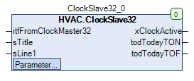
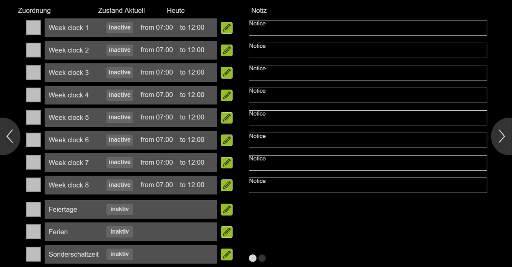

ClockSlave32 (FB)¶
FUNCTION_BLOCK ClockSlave32 EXTENDS Uhr_Base IMPLEMENTS IUhr
Short Description¶
Slave function block for a clock system with 32 weekly clocks, 30 public holidays, 10 vacation periods and 5 special switching times
Portrayal¶

Functional Description¶
General¶
Status of the slave channel xActive¶
week clock channels
Public holiday channel
Holiday channel
Special switching time channel
Central activation ( Master )
Central deactivation ( Master )
xActive Notes
FALSE FALSE FALSE FALSE FALSE FALSE FALSE Normal operation - Off
TRUE FALSE FALSE FALSE FALSE FALSE TRUE Normal operation - On
X TRUE FALSE FALSE FALSE FALSE FALSE Holiday operation - On
X FALSE TRUE FALSE FALSE FALSE FALSE Holiday operation - On
X X X TRUE FALSE FALSE TRUE Special switching times operation - On
X X X X TRUE FALSE TRUE Central activation ( Master )
X X X X X TRUE FALSE Central deactivation ( Master )
Central cancellation of all assignments xResetAssignment¶
Visualization¶
Suitable visualization element from the HVACV Visu Library: ClockSlave32_Clock7d1Ch_Start
Portrayal¶

Interfaces Visu-Element¶
Name Datatype
Type
Init-Value
Functional Description
FB_ClockSlave32 ClockSlave32 VAR_IN_OUT Enter FB ClockSlave32 here Example: PRG.ClockSlave32
FB_ClockMaster32 ClockMaster32 VAR_IN_OUT Enter FB ClockMaster32 here e.g. PRG.ClockMaster32
BMS_Active BOOL VAR_INPUT BMS (Building Management System) GLT (Building Management System). If BMS_Active = TRUE the input/editing of the clocks is deactivated because they can only be set via the BMS. Times can then only be viewed.
Codesys¶
- InOut:
Scope Name Type Initial Comment Inherited from Input itfFromClockMaster32 IUhrProtocol Clock_Base
sTitle STRING Designation for the slave function block
sLine1 STRING Designation of line 1 for the slave function block
ClockSlvPara stSlvClockData xSwitchTimeS BOOL Assignment of the special switching time channel ( FALSE = not assigned, TRUE = assigned )
xPublicHoliday BOOL Assignment of the public holiday channel ( FALSE = not assigned, TRUE = assigned )
xHoliday BOOL Assignment of the holiday channel ( FALSE = not assigned, TRUE = assigned )
xClockCH_32 BOOL Assignment of the channel of the week clock 32 ( FALSE = not assigned, TRUE = assigned )
xClockCH_31 BOOL Assignment of the channel of the week clock 31 ( FALSE = not assigned, TRUE = assigned )
xClockCH_30 BOOL Assignment of the channel of the week clock 30 ( FALSE = not assigned, TRUE = assigned )
xClockCH_29 BOOL Assignment of the channel of the week clock 29 ( FALSE = not assigned, TRUE = assigned )
xClockCH_28 BOOL Assignment of the channel of the week clock 28 ( FALSE = not assigned, TRUE = assigned )
xClockCH_27 BOOL Assignment of the channel of the week clock 27 ( FALSE = not assigned, TRUE = assigned )
xClockCH_26 BOOL Assignment of the channel of the week clock 26 ( FALSE = not assigned, TRUE = assigned )
xClockCH_25 BOOL Assignment of the channel of the week clock 25 ( FALSE = not assigned, TRUE = assigned )
xClockCH_24 BOOL Assignment of the channel of the week clock 24 ( FALSE = not assigned, TRUE = assigned )
xClockCH_23 BOOL Assignment of the channel of the week clock 23 ( FALSE = not assigned, TRUE = assigned )
xClockCH_22 BOOL Assignment of the channel of the week clock 22 ( FALSE = not assigned, TRUE = assigned )
xClockCH_21 BOOL Assignment of the channel of the week clock 21 ( FALSE = not assigned, TRUE = assigned )
xClockCH_20 BOOL Assignment of the channel of the week clock 20 ( FALSE = not assigned, TRUE = assigned )
xClockCH_19 BOOL Assignment of the channel of the week clock 19 ( FALSE = not assigned, TRUE = assigned )
xClockCH_18 BOOL Assignment of the channel of the week clock 18 ( FALSE = not assigned, TRUE = assigned )
xClockCH_17 BOOL Assignment of the channel of the week clock 17 ( FALSE = not assigned, TRUE = assigned )
xClockCH_16 BOOL Assignment of the channel of the week clock 16 ( FALSE = not assigned, TRUE = assigned )
xClockCH_15 BOOL Assignment of the channel of the week clock 15 ( FALSE = not assigned, TRUE = assigned )
xClockCH_14 BOOL Assignment of the channel of the week clock 14 ( FALSE = not assigned, TRUE = assigned )
xClockCH_13 BOOL Assignment of the channel of the week clock 13 ( FALSE = not assigned, TRUE = assigned )
xClockCH_12 BOOL Assignment of the channel of the week clock 12 ( FALSE = not assigned, TRUE = assigned )
xClockCH_11 BOOL Assignment of the channel of the week clock 11 ( FALSE = not assigned, TRUE = assigned )
xClockCH_10 BOOL Assignment of the channel of the week clock 10 ( FALSE = not assigned, TRUE = assigned )
xClockCH_09 BOOL Assignment of the channel of the week clock 9 ( FALSE = not assigned, TRUE = assigned )
xClockCH_08 BOOL Assignment of the channel of the week clock 8 ( FALSE = not assigned, TRUE = assigned )
xClockCH_07 BOOL Assignment of the channel of the week clock 7 ( FALSE = not assigned, TRUE = assigned )
xClockCH_06 BOOL Assignment of the channel of the week clock 6 ( FALSE = not assigned, TRUE = assigned )
xClockCH_05 BOOL Assignment of the channel of the week clock 5 ( FALSE = not assigned, TRUE = assigned )
xClockCH_04 BOOL Assignment of the channel of the week clock 4 ( FALSE = not assigned, TRUE = assigned )
xClockCH_03 BOOL Assignment of the channel of the week clock 3 ( FALSE = not assigned, TRUE = assigned )
xClockCH_02 BOOL Assignment of the channel of the week clock 2 ( FALSE = not assigned, TRUE = assigned )
xClockCH_01 BOOL Assignment of the channel of the week clock 1 ( FALSE = not assigned, TRUE = assigned )
xResetAssignment BOOL FALSE Central cancellation of all assignments ( FALSE = Off, TRUE = On )
Output xClockActive BOOL State of the clock channel of the slave function block ( FALSE = Off, TRUE = On )
todTodayTON TOD Earliest switch-on time of the current day
todTodayTOF TOD Latest switch-off time of the current day